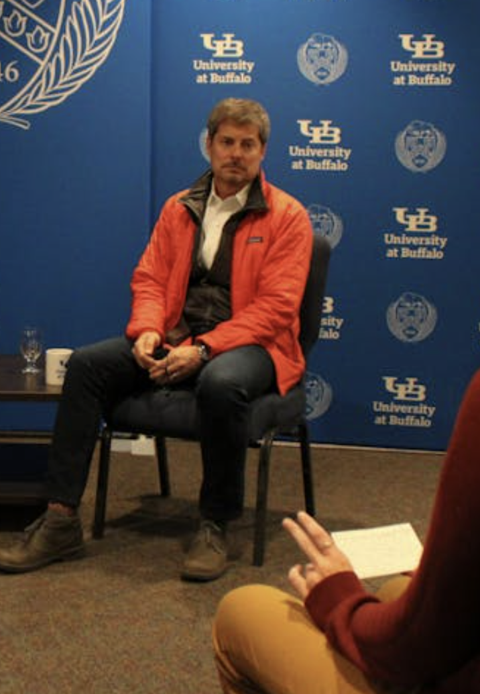
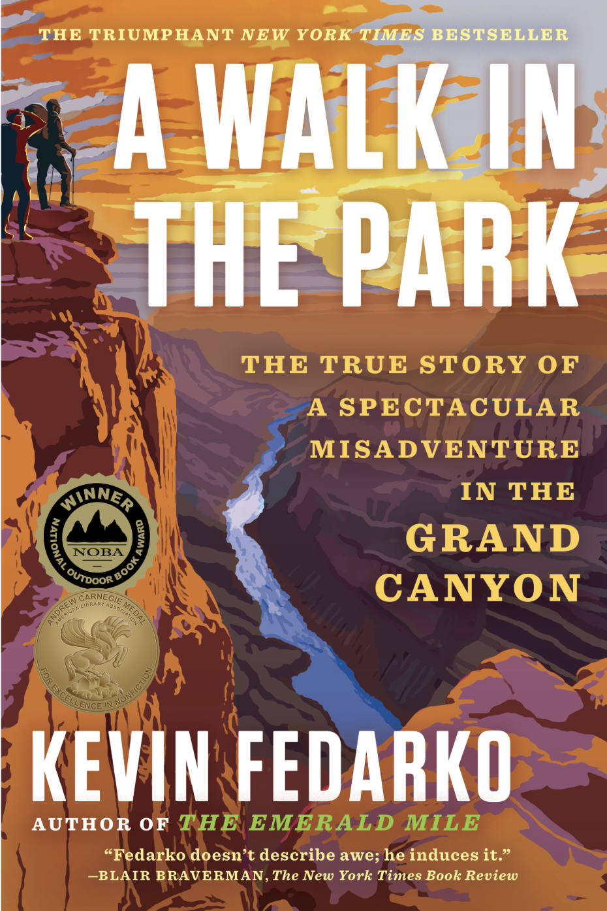
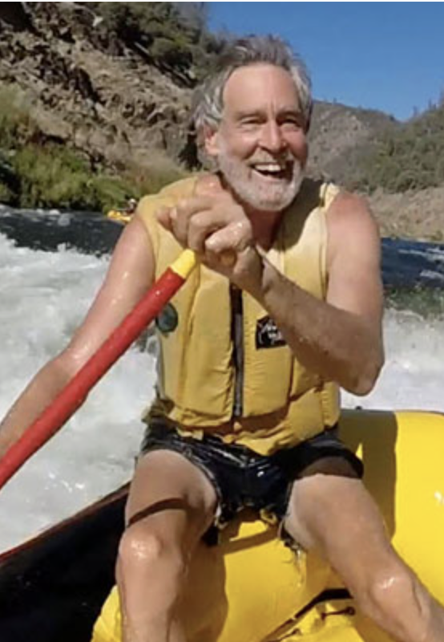
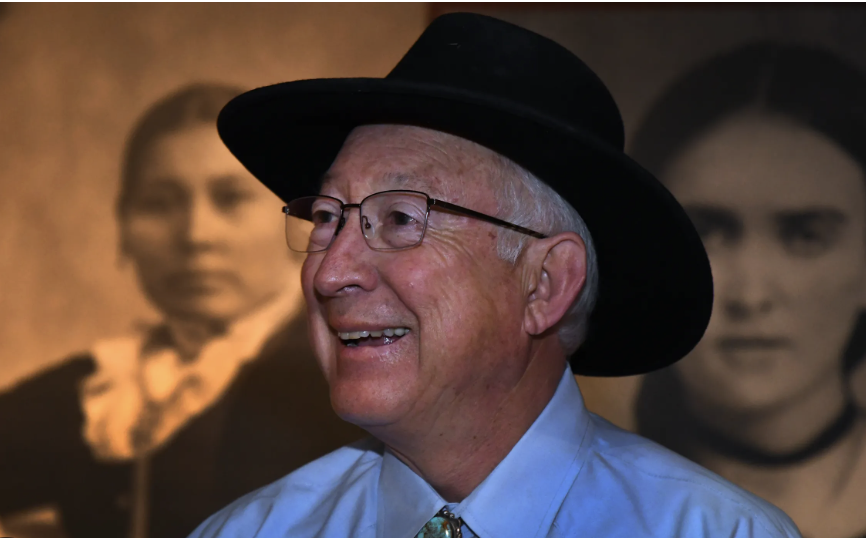

We Are Rivers
Apple Podcasts Reviews
The Story Behind “We Are Rivers,” American River’s Podcast Series:
I was an 18-year-old aspiring writer, fascinated by Western water conservation and law—and increasingly frustrated by how much waste in the system seemed to stem from misinformation and a basic lack of public understanding.
One day, I was reading an article in The Atlantic about the “use it or lose it” water policy, a subject I had recently explored in an independent podcast. And as I read this award-winning publication known for its journalistic rigor, I had a strange realization: They’re explaining the law wrong.
I sent the article to two water-policy experts I had interviewed. Sure enough, the explanation was an incorrect oversimplification that distorted the reality of the policy so much that, unbeknownst to the journalist, reinforced one of the very schools of thought contributing to water waste in the Western United States.
The more I researched, the more I realized how widespread the problem was. Western water law is an extraordinarily complicated world of law, science, history, politics, agriculture, economics, identity, and culture. Even a famous documentary got the policy details wrong–it was that complicated to understand. And yes–also boring.
Meanwhile, most people had little idea where the water coming out of their own tap actually came from, much less how the policies governing it could incentivize either conservation or tremendous waste. And these weren’t abstract misunderstandings: in the American West, communities have fought—and, historically, even killed—over water. And this particular policy, at the time, was creating a political bloodbath—sparking protests and pitting communities, policymakers, and water interests against one another.
But underneath all of that complexity was an incredible tapestry of people and stories. The problem wasn’t that the subject was inherently too boring to understand or too difficult. The problem was that the people who understood it best were rarely storytellers or expressive, and the people telling the stories didn’t always understand the subject deeply enough.
I wanted to bridge that gap.
I pitched a podcast to American Rivers, one of the country’s largest river-conservation organizations, responsible for lobbying for landmark legislation such as the Clean Water Act in Congress. My argument was simple: through their extraordinary network of policy experts, scientists, advocates, and people whose lives revolved around rivers, they had an opportunity to become a trusted source of public education about Western water—but information alone wasn’t enough. If they wanted the average person to understand why these issues mattered, engage with conservation, support their work, and ultimately care about protecting rivers, that information had to be translated into something accessible, human, and genuinely entertaining in a medium that busy people can easily engage with: while doing laundry, driving to pick up their kids, going on a run, et cetera. Podcasting.
They had the connections, and they had the need. But they didn’t have a storyteller and they didn’t have an easily accessible storytelling medium.
I pitched the series, attaching myself to write, host, and audio-edit it.
They said no. They thought the idea was too risky to fund.
So I offered to produce and release the first three episodes free of cost as a proof of concept.
They said yes.
Within months, it became their most successful tool for public engagement. The series amassed hundreds of thousands of listens across platforms through word of mouth alone—and even helped bring together major players in the water world who had once been bitter adversaries.
The podcast was officially greenlit.
I interviewed policy experts, river legends, renowned activists, former U.S. Secretary of the Interior Ken Salazar, and New York Times bestselling authors such as Kevin Fedarko, among many others. When Fedarko—an award-winning journalist and bestselling author—was researching his 2024 book, A Walk in the Park, he told me he was using the series as part of his research.
The podcast continues today, and its success ultimately inspired American Rivers, a nationwide organization with offices across the country, to establish an entire storytelling department.
When I eventually decided to leave American Rivers to focus on my degree in Organismal Biology and Ecology while developing a narrative feature film, I asked them to replace me with my boss—whom I adored—and helped facilitate the transition.
We Are Rivers was my first ever media project, though my technical editing and production skills are admittedly much better today, how I approach storytelling has remained the same. I take important subjects people might otherwise find too technical, complicated, unfamiliar, or uncomfortable to engage with, find the compelling human narrative inside them, and turn that complexity into something an average person can understand—and make it bingeworthy to them. I get the information and logistics and histories and complicated science across–but I do it through the syntactic sugar of fun analogies and a good human-centered story.
These gripping, human-centered stories are everywhere, in everything. From the semiconductor industry to the stapler. From the CDC’s fentanyl crisis statistics to hospital administration and mismanagement. From water law and policy to—dare I say it—tax law.
Everything can become wildly interesting, engaging, and easy to understand. You just have to look hard enough to find the syntactically sweet story underneath it all.
The human story. The hook.
I have a technical mind—with degrees in organismal biology and computer science—and a storyteller’s soul. Let me help you find the stories at the heart of your industry or NGO and make it impossible for the public and government not to root for you!



